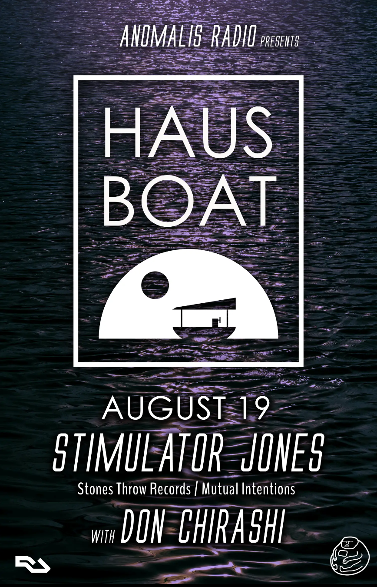

Where to find us next...
Listen to some music...
Some recent videos...
Want to buy stuff?
A little about us...
Sly Fox
Ray Harris, aka Sly Foux gets dubbed “The Chameleon'' by the rest of the crew- because not only does Sly find the smoothest blends, he’s also the most adaptable- always reading the vibe, and making sure he’s contributing the right energy for the room. Originally part of the Petersburg Hip Hop collective, MVDEMEN- Sly’s musical background was heavily influenced by electronic music & Jazz, always with the Blues at the core - especially Muddy Waters and Howlin Wolf as major inspirations. He connected with Don Chirashi in 2019 over a similar appreciation for Jazz-infused, soulful Deep House. Soon after they began performing as a duo around Richmond, eventually landing a monthly residency at the Annex called Deep & Dusty. Covid shut down the momentum (& the Annex - RIP) so he & Don came up with the idea of doing a monthly DJ podcast along with socially-distanced outdoor events, and Anomalis Radio was born. Sly’s sets are always bursting with excitement, fast paced transitions take you from modern Afrobeat to the classic sound of Chicago & Detroit- always high in energy & as soulful as possible. If you ask Sly why he does what he does, you won’t get a self-centered response: “Just trying to do something for the people to keep them liberated and strong in spirit, to stay prideful and aware of who you are for self-progression - This is the message I send behind House music.”
Don Chirashi
Don Chirashi is the DJ alias of Richmond based multi-instrumentalist & producer, Steve Owen. Growing up in a musical family, it was easy to find a wide range of influences- his father was a jazz saxophonist and his mother, a choral conductor. Steve started playing guitar & making beats on a Tascam recorder in middle school, eventually studying classical guitar at VCU and playing bass in several projects in & after college. He started his first organization: Richmond Electronic Collective (REC) in 2012, which ran a monthly producer showcase called REC Room for several years- also producing three compilations and hosting dozens of shows, beat challenges and other producer workshops. In 2018, his friend DJ No Wifi tipped Steve to electronic producer, Frits Wentink- which completely changed the kind of music he wanted to create and began a search for a new kind of dance music. Meeting Sly Foux shortly after, Steve found a DJ partner that shared a similar love for this fresh style of heavily Jazz-influenced Deep House and they began performing as a duo around Richmond. After their regular residency was shut down during the pandemic, they started livestreaming pop up shows at various outdoor river locations & launched a monthly podcast mix series: Anomalis Radio. Currently, Steve is compiling Anomalis releases for next year & wrapping up his own album, plus trying to come up with new show concepts & cool locations - be sure to grab tickets to Haus Boat in 2023! Check out his self-released Skylight EP or tracks on both Anomalis Radio compilations: Shlomp House & Dear World. Look for the second solo EP - Raphine, due out Summer 2023 on Anomalis Radio.
Al Lupo
Virginia Beach native & VCU grad, Alex Gerber aka Al Lupo spent a few years in Chicago where he fell in love with House music, ultimately returning to Richmond looking for new outlets and new sounds. Diving deeper into the Jazz & Boom Bap influence, he's arrived into something very much his own - and very much core to the Anomalis sound. Linking with Don Chirashi shortly after Anomalis Radio was founded, he’s become a crucial member & continues to track down some of the amazing guest DJ’s for the mix series podcast. If you've seen any of the Popup Stereo streams or been to our shows you might have caught him spinning some Felix Leifur, Last Nubian, or Donnie Moustaki - this man pulls out warm & wonky grooves from around the world with remarkable consistency. Imagine Herbie Hancock if he grew up in Amsterdam in the 90's. Listen to his original tracks on the Shlomp House & Dear World compilations by Anomalis Radio and be sure to check out his weekly radio show: Clean House on WRIR 97.3 FM every Saturday 7-9AM. Currently working on his first solo EP - slated for release Spring 2023 on Anomalis Radio.
DJ No Wifi
Dan Bowling, aka DJ No Wifi is the futurist & the pioneer of the group, always finding tracks that feel like they came from next year. He's also sitting on a harddrive of unreleased music (but looking to change that). In his own words, "I got into making music because I’ve always loved sharing music with people, but never really even thought about producing & DJing until I saw Orchard Lounge at Canal Club in Richmond and then I was like ok yaaa I’m about this." He started playing in Richmond mid 2010's & met Steve (Don Chirashi) who was running a producer showcase called REC Room, where he became a favorite playing all original sets. Eventually moving to Denver, he's begun DJing more frequently- now a regular at The Black Box. A frequent collaborator with Big Wave fka Hydrophonics, Floensi & many others, dude is nonstop- he will regularly DM you 5 beats he just made that night. Drawing inspiration from Ross From Friends, Four Tet, K-Lone, Dark Sky, & Machinedrum, his live sets give a sense of exploration & discovery- blending Juke with House & Garage laden with percs and extraterrestrial sounds that defy explanation, ultimately delivering you to some place you've never been. Now living in Los Angeles & currently working on like 1000 EPs - check his other alias Roy Donk's release on LUFS Records, or DJ No Wifi tracks on Shlomp House & Dear World by Anomalis Radio, with more on the way.